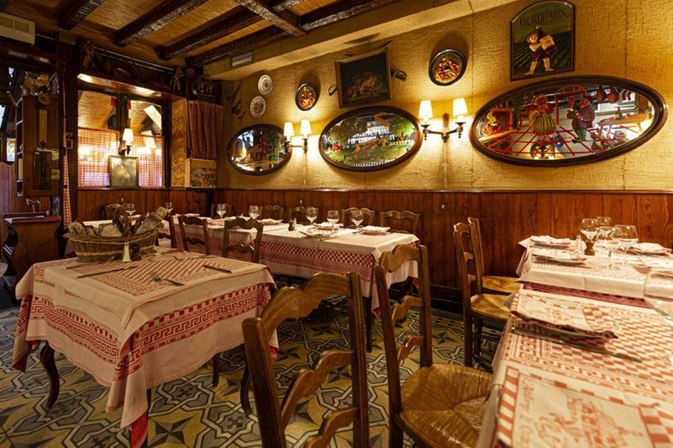
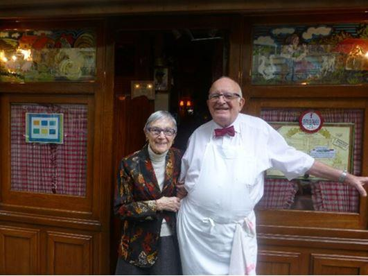
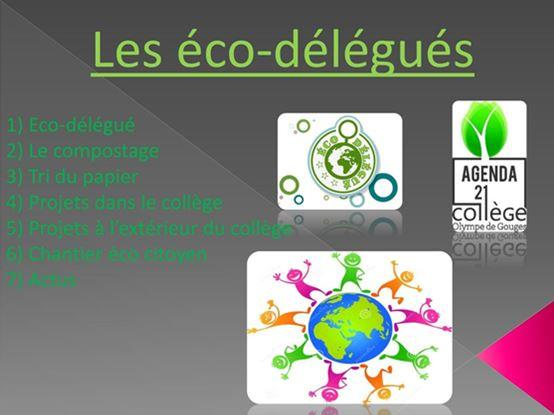

Au bas de l’avenue Ledru-Rollin se trouve une petite auberge qui avance légèrement sa devanture sur le trottoir. Elle présente au public une discrète façade dont les panneaux en bois clair sont surmontés par quelques fenêtres ornées de rideaux en dentelle qui protègent les convives de la curiosité des passants tout en laissant pénétrer la lumière. Lorsqu’on ouvre la porte de l’échoppe et qu’on y entre, des murs en lambris recouverts de toutes sortes de souvenirs, photographies et dédicaces entourent une quinzaine de tables recouvertes de nappes à carreaux rouges et blancs autour desquelles devisent, parfois bruyamment, des connaisseurs et habitués en attendant les plats qui sortiront bientôt d’une cuisine qu’ils peuvent entrevoir depuis leur place et d’où s’échappe le fumet de quelque blanquette de veau ou joue de bœuf qui y mijote dès potron-minet. Il faut aussi traverser cette cuisine pour se rendre aux toilettes de l’établissement situées dans un cagibi au fond de la cour.
À l’issue de chaque repas dont les plats se distinguent davantage par la richesse que la finesse, le patron, qui se fait appeler « Bobosse », s’avance vers la table qu’on s’apprête à quitter pour servir le digestif. Même si l’on est repu, on ne manquerait pour rien au monde un cérémonial au cours duquel il fait chauffer des verres en cristal à la flamme tout en ponctuant depuis des lustres chacun de ses gestes alertes, dont l’enchaînement est parfaitement exécuté, par quelque mot d’esprit qui ressemble à du Guitry récité par un maraîcher de Rungis.
Ce jour-là, comme mon épouse et moi avions un peu de temps en attendant de prendre notre train à la Gare de Lyon, nous restâmes quelques heures et eûmes droit aux confidences de « Bobosse » sur sa vie dans l’appartement qui se trouve juste au-dessus du restaurant, sa femme malade à laquelle il venait de rendre visite, sa campagne qui lui manquait, mais aussi un tas d’anecdotes sur les plus ou moins « grands » de ce monde qu’il servit avec la même attention que celle qu’il nous accordait présentement, passant des réunions politiques autour de Jacques Chirac à la venue peu discrète de Morgan Freeman et Robert de Niro qui nécessita la présence d’une compagnie républicaine de sécurité pour interdire l’avenue à la circulation pendant que ces messieurs dégustaient un pot-au-feu en vessie.

« Bobosse » et son Madame
L’auberge « Le Quincy » est ce qu’on appelle une institution. « Bobosse », qui y veille du matin au soir, en est l’âme au point qu’il est lui-même une institution dans l’institution. Changer ne serait-ce que la vaisselle ou la couleur des nappes reviendrait à commettre un sacrilège. Remplacer la salade de museau par une pizza pour se mettre au goût du jour paraîtrait insensé. Quand cet homme aura fait son temps et laissera au premier venu qui rachètera son restaurant la possibilité de tout refaire à son goût ou le transformer en bar à eaux plates pour égayer les soirées des petits-bourgeois en trottinette qui prolifèrent dans la capitale avec la même vitesse que les rats, Paris aura perdu l’un de ses joyaux.
Il en va ainsi de l’école. Elle est présentement dans un état de délabrement institutionnel, et je pèse mes mots. Le système fonctionne certes, tant bien que mal, et seulement porté par sa propre inertie. Mais cette machine n’a plus grand-chose d’une institution, comme nous en avertit d’ailleurs l’abandon du si beau titre d’« instituteur de la République » au profit de la dénomination équivoque de « professeur des écoles », dont le pluriel est si saugrenu. L’école n’est plus considérée ni traitée comme une institution, que ce soit par des gouvernants qui n’y respectent plus rien et passent leur temps à la réformer puis à réformer leurs propres réformes, ou que ce soit par ceux qui croient la défendre. Ces derniers ne voient plus en elle que cette chose qu’ils appellent « le service public d’éducation », dénomination impropre dont l’usage permanent les condamne à se contenter de réclamer des moyens et des postes, comme si les déboires de l’école étaient d’une nature comparable à ceux de la SNCF. Il devrait pourtant aller de soi qu’instruire n’est pas rendre service, qu’on n’enseigne pas les lettres ou les mathématiques comme on distribue le gaz ou le courrier, et que les élèves ne sont en aucune façon des « usagers », pour ne rien dire de leurs géniteurs. Il n’y avait point non plus d’école lorsqu’on confiait l’instruction à des esclaves ou à des précepteurs qui étaient les serviteurs de ceux qu’ils étaient censés éduquer, situation absurde à laquelle mit justement fin l’institution de l’école dont la forme la plus achevée fut celle que lui donna la République.
Instituer, c’est fonder un ordre, donner un cadre, marquer des repères, assigner enfin des places aux uns et aux autres. Cette fonction sociale structurante est essentielle. Aucune société ne peut se passer d’institution. La première de toutes est le mariage ou, comme l’a montré Claude Levi-Strauss, la prohibition de l’inceste, celui-ci n’étant au fond que confusion des places. Sans institution, l’anomie s’installe, et si ordre il y a encore, ce dernier n’est qu’une apparence n’offrant au chaos d’autre résistance que celle, si fragile et trompeuse, qui repose sur la routine. L’école n’est plus une institution, mais en dépit de ses dysfonctionnements de plus en plus visibles, peu s’en aperçoivent parce que « le service public d’éducation » donne malgré tout l’impression de fonctionner grâce à la résignation dont la plupart font preuve. Le stupéfiant régime de réformes incessantes auquel l’école a été soumise pendant quarante ans n’a finalement eu d’autre résultat, en sus de la désinstruction, que de détruire tout ce qui faisait d’elle une institution à proprement parler, et la principale en République. Ce n’est plus désormais qu’un terrain d’expérimentations et d’innovations qui finira bientôt en simple terrain vague.
Dès qu’on délaissa la formation de l’esprit, qui repose sur les disciplines autant qu’elle requiert de la discipline, on tourna le dos à la fonction de l’école et on ouvrit la porte à son invasion par toutes sortes de gadgets n’ayant pour eux que la nouveauté et auxquels on finit par trouver l’avantage d’occuper les jeunes en leur faisant oublier que, pendant ce temps, on ne les instruisait pas. Cela commença de façon très insidieuse, par petites touches introduites çà et là, si bien qu’on n’y prêta pas forcément attention. On remplaça dans le cahier de textes de la classe le mot « leçon » par celui d’« activités ». On supprima les rangs pour mettre les tables en « îlots » en organisant sciemment un bavardage qualifié de « bruit pédagogique ». On se vanta enfin de « faire péter l’estrade ». On finit par inventer « la classe inversée » où les cours, nommés « capsules », sont envoyés aux élèves par l’internet afin qu’ils les travaillent chez eux ! Puis ce fut le tour des disciplines. On se mit à réécrire sans cesse les programmes en les vidant à chaque fois de plus de substance au profit de la description de « compétences » qu’on dirait extraites du journal intime d’un paranoïaque. On leur retira des heures de toute part. On alla même jusqu’à supprimer la notation qui, paraît-il, était la cause d’un traumatisme dans la jeunesse. On inventa enfin ces « heures de rien » aux intitulés imprononçables dont tout ministre se croit tenu d’augmenter le nombre pour apporter sa contribution à la désinstitution de l’école.
Pourtant, même le concepteur d’un de ces gadgets, l’EMC (Enseignement moral et civique), lui-même successeur de l’ECJS (Education civique, juridique et sociale) qui avait remplacé l’« Éducation à la citoyenneté » (sic) reconnaissait, en voulant défendre son bébé, que cette prétendue « discipline » n’avait finalement pour unique objet que d’expliciter ce à quoi toutes les autres contribuaient déjà ! Et qui ne voit en effet que toute discipline bien enseignée, par cela même qu’elle forme l’esprit, forme également et de la meilleure façon le citoyen ?
On ne s’arrêta pas en si bon chemin. Après s’être attaqué au mobilier et au menu, on fit valser les places des uns et des autres au point que dorénavant plus personne ne semble être en mesure de connaître et surtout de garder la sienne. On inventa tout d’abord le parent d’élève professionnel en oubliant que les parents n’ont que des enfants et que ce sont les professeurs qui ont des élèves. On les fit élire pour qu’ils puissent parler au nom de tous les autres alors qu’ils ne représentent qu’une poignée d’individus dont certains s’accrochent à leur mandat bien que leurs enfants aient quitté l’école depuis longtemps. Pour les occuper, on créa au sein de l’éducation nationale une invraisemblable quantité d’instances et de comités qu’ils adorent fréquenter et où ils finirent par être représentés à part égale avec les personnels, les uns et les autres fusionnant dans une « communauté éducative » dont la consécration par la loi fit faire un grand pas en avant sur la voie de la désinstitution de l’école et de la confusion généralisée. Puis, ne sachant plus où donner de la tête ni de quelle manière se rendre intéressant, on persuada, pour finir, les élèves qu’ils avaient eux aussi leur mot à dire sur l’organisation des enseignements et la détermination de leur contenu, sur les emplois du temps et les choix pédagogiques de leurs professeurs. Non content de leur faire élire des délégués, il fallut que ces délégués en élisent d’autres, qui pour aller siéger au « Conseil académique de la vie lycéenne », qui pour être membre du « Conseil national » de cette même « vie lycéenne », qui enfin pour participer aux travaux du Conseil supérieur de l’éducation. Je ne parle même pas de « l’heure de vie de classe » placée de huit à neuf heures et reléguant celle de mathématiques ou de littérature anglaise en fin de journée, de dix-sept à dix-huit heures. On est maintenant parvenu à un point où le moindre évènement qui fait l’actualité suffit à engendrer un nouveau gadget dont recteurs et inspecteurs se font immédiatement les VRP alors qu’ils n’attachent eux-mêmes, pour la plupart, aucune importance à de telles babioles.
Ne vient-on pas d’annoncer à grand renfort de communiqués de presse que chaque classe allait désormais élire son « éco-délégué » pour « sensibiliser » les élèves au réchauffement climatique comme s’il ne suffisait pas à cette fin de les faire venir à l’école en pleine canicule ?
Je ne suis évidemment pas choqué par le fait qu’on les incite dès le plus jeune âge à se soucier de leur planète, mais j’avoue l’être quand on les prive pour ce faire d’une véritable instruction et qu’on utilise l’école pour apprendre aux jeunes gens à trier les déchets ou à ramasser ceux que nous laissons traîner derrière nous au lieu de leur apprendre le maniement correct de la langue française et l’usage de la raison qui sont les premières conditions pour pouvoir se conduire.
L’école est entrée dans l’ère du gadget. D’autres institutions la suivent et il est à craindre que la République tout entière finisse par devenir un « service » dont les citoyens croiront être des « usagers ». La désinstruction n’est elle-même, en effet, qu’une des manifestations spectaculaires d’une crise de l’éducation, d’une crise de l’autorité, et notamment de l’autorité républicaine. Les attendus qui accompagnent l’instauration d’un service national universel, et dont le principe n’est pas mauvais en soi, en fournissent hélas une cruelle illustration, à côté de quoi la désinstitution de l’école pourrait presque paraître anecdotique. Lorsque j’ai lu le « Rapport du groupe de travail sur le SNU » remis au Premier ministre, j’ai d’abord cru à une blague, et ce dès le préambule. J’invite chacun à le lire et n’en citerai ici que quelques bribes afin que le lecteur puisse juger sur pièces de ce que je tiens quant à moi pour l’aveu toute honte bue du renoncement d’une génération à assumer sa fonction d’éducateur et les devoirs qu’elle implique vis-à-vis des suivantes.
On y présente le service national universel comme « un projet de société » dont les multiples finalités sont ensuite déclinées sous la forme d’un catalogue à la Prévert qui donne le tournis : « favoriser (sic) la participation et l’engagement de chaque jeune dans la vie de la Nation », « valoriser la citoyenneté (sic) et le sentiment d’appartenance à une communauté rassemblée autour de ses valeurs », « renforcer la cohésion sociale », « dynamiser le creuset républicain » (sic) ! Comme l’école, chargée de missions toujours plus nombreuses qui la détournent de sa véritable fonction, le « SNU » est une sorte de « couteau suisse » qui, parce qu’il est destiné à tout faire, risque de n’être bon à rien. Le rapport ne se montre pas non plus très embarrassé par le fait qu’un dispositif à l’utilité douteuse et aux ambitions démesurées nécessite une modification de la Constitution qu’il semble tenir pour un détail. En toute tranquillité, on s’apprête donc à changer la Constitution pour l’adapter à un gadget qui, en l’état, ne lui est pas conforme !
En effet, il n’est pas possible d’imposer à toute une classe d’âge un « séjour » et des « activités » (sic) qui ne sont pas exclusivement liés aux besoins de la défense nationale. Qu’à cela ne tienne ! Rendons constitutionnel ce qui ne l’est pas et le tour sera joué ! Tout citoyen un tant soit peu soucieux des libertés publiques en général et de la liberté de penser en particulier devrait pourtant frémir en songeant qu’on envisage d’imposer à toute une classe d’âge des « activités » qui ne sont pas liées aux besoins de la défense nationale. C’est d’ailleurs la raison pour laquelle, en attendant cette « adaptation » de la Constitution, le « SNU » se déploiera d’ici là sous une forme quasiment expérimentale et sur la base du volontariat. Espérons qu’un tel délai sera mis à profit pour que chacun se réveille et qu’un débat digne de ce nom puisse enfin avoir lieu tant sur la pertinence d’un dispositif aux prétentions ahurissantes que sur des modalités qui relèvent a contrario pour l’heure presque toutes du bricolage.
En réalité, ce débat aurait dû se dérouler avant l’annonce de la suppression du service militaire, dont il eût fallu dès ce moment penser plus sérieusement l’indispensable mutation au lieu d’attendre que l’évidence, pour un État républicain, d’imposer à ses membres dès leur jeunesse un service obligatoire se soit estompée dans les consciences en même temps que son souvenir. Cela aurait évité au gouvernement qui entreprend, près de trente ans après, de rétablir quelque chose y ressemblant, de devoir prendre moult précautions et donner le sentiment de marcher sur des œufs tant il craint la fronde de cette jeunesse à qui il ne cesse de promettre tout et n’importe quoi, à commencer par « la réussite », pendant qu’il la prive des repères dont elle a besoin. Non que je déplore la disparition du service militaire, dont chacun reconnaît que le fonctionnement n’était plus guère satisfaisant et que la forme n’était plus adaptée aux besoins réels des armées ni aux menaces qui conduisent désormais ces dernières à être projetées sur des terrains d’opération éloignés du sol national.
Mais c’est en amont et bien avant de le supprimer qu’il aurait fallu repenser le service national et se demander comment conserver le meilleur de l’ancien tout en évitant le pire et mettant de côté l’obsolète. On aurait peut-être abouti alors à la création d’un authentique service de sécurité civile, dont l’utilité et le besoin sont si manifestes à tous égards, qu’il s’agisse de rendre chaque citoyen comptable de la conservation et de la bonne santé de la République là où il se trouve et avec les moyens qui sont les siens, ou bien de le rendre apte à agir efficacement en cas de péril.
Mais voilà ! Faute d’avoir pris les bonnes décisions au bon moment, le gouvernement de la République est aujourd’hui contraint de se soucier auprès des plus jeunes de ce qu’il appelle l’« acceptabilité » (sic) de règles qui ne souffraient hier aucune discussion ! Pis, il en neutralise la portée à grand renfort d’« éléments de langage » vidés de toute substance, à l’instar des inévitables « valeurs de la République » servies en accompagnement de tous les renoncements et de toutes les lâchetés de l’action publique dans le domaine de l’éducation prise au sens large de formation morale de l’homme et du citoyen. La seule question que l’on se pose aujourd’hui n’est donc plus de savoir ce qu’il faut exiger de chaque citoyen afin qu’il en reçoive pleinement la qualité, ni ce qu’il faut lui apprendre afin qu’il contribue utilement à la concorde et la paix civile, mais, après avoir supprimé une obligation qui était en partie devenue caduque, mais en partie seulement, et l’avoir remplacée par une simple formalité, comment faire pour la rétablir sans en donner l’impression ni ouvrir à cette occasion la boîte de Pandore des jérémiades et des récriminations ?
Quand il reçut le rapport du groupe de travail sur le « SNU », le gouvernement annonça qu’il le faisait sien. Or que fait-il sien exactement ? Un certain nombre de propositions destinées à rétablir quelque chose qui ressemble vaguement à un service national moderne, ou bien l’idéologie qui sous-tend ces propositions ? De fait, ce rapport ne contient qu’une très succincte description du « service national universel » lui-même. On apprend seulement qu’il sera composé d’une phase obligatoire dite « de cohésion », sorte de « vivre-ensemble » pris à la lettre avec hébergement, nourriture et activités communes du matin au soir, et d’une phase plus longue dite « d’engagement », ce dernier étant laissé au bon vouloir de chacun et organisé en « filières » pour satisfaire toutes les appétences. La plus grande partie du rapport est en réalité consacrée à s’inquiéter des conditions d’« acceptabilité » et d’« attractivité » de ce dispositif dont on s’excuse presque de devoir encore le nommer « service national » et de l’imposer à une jeunesse érigée en juge de son bien-fondé autant que de son contenu ! On comprend mieux dès lors la raison pour laquelle, depuis sa première mise en œuvre à titre expérimental, le « SNU » fit l’objet d’une si navrante campagne publicitaire, digne du lancement d’une nouvelle marque de chaussures de sport.
Il faut vendre le « SNU » à la jeunesse. D’où un budget faramineux qui n’a pour l’instant servi qu’à la « communication », et notamment à des films promotionnels d’une stupéfiante vacuité qui révèlent surtout la très basse idée que leurs auteurs se font de jeunes gens traités comme des êtres superficiels dont les « valeurs » se résumeraient au sport, à la convivialité et la bonne humeur. Certains de ces « clips » vont jusqu’à présenter le « SNU » comme une occasion de voyager gratuitement, de découvrir des paysages et de se faire des amis !
Est-ce vraiment cela dont on a besoin en France en ces temps difficiles ? Le « SNU » va-t-il devenir le énième rendez-vous festif d’une jeunesse privée de lettres et maintenue en couveuse ? Le point d’orgue d’un « parcours citoyen » (sic) au terme duquel la politesse sera devenue l’archétype de la vertu ?
On peut le craindre au vu des premiers échantillons de ce qui se fera bientôt à grande échelle sous l’avenant habit du « SNU », habit que ledit rapport n’ose d’ailleurs même pas appeler « uniforme » de peur de traumatiser la jeunesse en utilisant un champ lexical qui pourrait la braquer, et qui lui préfère l’expression de « tenue commune »… Par exemple le lever des couleurs, qui chez les militaires est une chose sérieuse rappelant à chacun d’eux qu’il est prêt à faire le sacrifice de sa vie pour la défense de la nation, quelle signification peut-il avoir quand il se produit au sein d’un hébergement qui ressemble plus à un camp de vacances qu’à une caserne ? Que peut-il encore signifier entre une séance où l’on apprend les gestes de premiers secours et plusieurs séances de sports ou d’« activités » ludiques étalées sur une petite quinzaine de jours ? L’attractivité, telle serait donc la « clef du succès » du « SNU » selon les auteurs du rapport qui y consacrent la plus grande partie de leurs cogitations sans paraître le moins du monde gênés par le fait de parler de « succès » pour ce qui est censé remplacer l’ancien service militaire et devrait avoir par conséquent la dignité d’une institution. Or c’est là sans doute que se niche la plus grande escroquerie dont, à l’exception de quelques propositions utiles et de bon sens, ce dispositif est la face visible. On ne saurait, nous dit-on dès le début, « tenir un discours mobilisateur pour un projet concernant la totalité d’une classe d’âge en des termes autoritaires, moralisateurs et passéistes (sic) que la jeunesse récuse avec fermeté, y compris dans la rue si nécessaire, depuis 50 ans. Le service national universel ne doit donc pas être conçu, ou regardé, comme le projet d’adultes, raisonnables et vieillissants, imposant à une jeunesse turbulente une période durant laquelle on lui enseignerait l’autorité et les vraies valeurs. Les générations qui le feraient ont peu de titres à prétendre parler ainsi avec autorité, et la jeunesse ne mérite aucunement un jugement de valeur négative. Il s’agit en réalité de construire un projet de société, qui vise à la transformer, qui implique, à la fois, les jeunes générations qu’elle concernera, mais aussi, parce qu’elles sont chargées d’organiser, de rendre attractif, et de participer à cet engagement général, les générations plus âgées, qui devront s’adapter à cette évolution. Ou la conception en sera collective, faisant une large part à l’initiative, à la proposition et à l’écoute de la jeunesse, ainsi qu’à l’implication du tissu associatif, des entreprises, des syndicats, des collectivités territoriales, et de l’ensemble des services publics, ou bien l’échec est pleinement garanti. » (« Rapport du groupe de travail SNU », pp. 4-5.) !
Relisons bien ce passage : « Le service national universel ne doit donc pas être conçu, ou regardé, comme le projet d’adultes, raisonnables et vieillissants, imposant à une jeunesse turbulente une période durant laquelle on lui enseignerait l’autorité et les vraies valeurs ». Tel est, naïf et terrifiant à la fois, l’aveu d’impuissance d’une génération elle-même dépourvue de repères et confondant allègrement l’autorité avec l’autoritarisme. Une génération incapable d’assumer sa place vis-à-vis d’une jeunesse qu’elle renonce à éduquer autant qu’à instruire, et qu’elle renonce finalement à instruire parce qu’elle renonce d’abord à l’éduquer. Tout éducateur qui négocie son autorité ou s’en excuse s’en rend indigne. Plus encore, il se rend indigne des jeunes gens dont il a la responsabilité et qui ne lui demandent rien de tel, bien au contraire. Tout éducateur qui cherche à être aimé de ceux qu’il éduque cesse par là-même de pouvoir les éduquer. La République ne fait plus observer la discipline dans les écoles de peur d’être trop sévère, elle renonce à faire respecter la grammaire et l’orthographe de peur d’être trop élitiste, elle délivre des diplômes en chocolat à des jeunes gens qui sont désormais sur le point de les réclamer par simple pétition et, au moment de rétablir quelque chose qui ressemble à un service civique, comportant nécessairement une part de si bien nommée « instruction militaire », elle s’empresse de lui donner l’allure d’un jeu afin de le faire plébisciter par une jeunesse qui n’a finalement jamais été autant méprisée. Platon qualifiait ce genre de pratique de flatterie. Il considérait non sans raison l’éducation comme le problème politique par excellence. Un grand lecteur de Platon que j’ai déjà cité, Léo Strauss, a parfaitement résumé le problème de l’éducation et la difficulté de la démocratie à trouver une solution à ce problème : « En premier lieu, ce que l’on nomme aujourd’hui éducation ne désigne très fréquemment pas l’éducation proprement dite, c’est-à-dire la formation du caractère, mais plutôt l’instruction et l’apprentissage. Deuxièmement, dans la mesure où l’on vise effectivement la formation du caractère, il existe une tendance très dangereuse à identifier l’homme bon avec le « bon joueur », le type coopérant, le « gars régulier », c’est-à-dire à trop souligner un certain aspect de la vertu sociale et à négliger parallèlement les vertus qui ne mûrissent, voire ne se développent pleinement, que dans le privé, pour ne pas dire dans la solitude : en éduquant les gens à coopérer dans un esprit d’amitié, on ne forme pas encore des non-conformistes, des gens prêts à se tenir debout tout seuls, à se battre seuls, des « individualistes irréductibles ». La démocratie n’a pas encore trouvé le moyen de se défendre contre le conformisme rampant et contre l’empiétement toujours croissant sur le privé qu’elle encourage. » (Léo Strauss, « Qu’est-ce que la philosophie politique ? » 1959).
À l’heure où les autorités de la République sont incapables ne serait-ce que de faire observer une minute de silence dans toutes les écoles en hommage à la bravoure d’un soldat, comme ce fut honteusement le cas pour Arnaud Beltrame par exemple, à l’heure où la violence, d’abord verbale, se donne libre cours à la faveur de technologies numériques dont on ne mesure pas encore complètement les effets néfastes sur la vie sociale et politique au sein de nos démocraties si fragiles, il est temps, pour prendre les bonnes décisions, de se poser les bonnes questions. Que ce soit au sujet du service national ou à celui de l’école, il est temps de redresser la barre et de redevenir sérieux.
Il est urgent que nos sociétés modernes se remettent enfin à l’endroit et que des adultes qui craignent de paraître « raisonnables et vieillissants » cessent enfin de faire les enfants, ce qui les conduit à abandonner les leurs à eux-mêmes. Le débat relatif au service national universel pourrait en être l’occasion si chacun s’en saisit et le porte à la hauteur convenable.
Il n’est pas permis, en tout cas, d’éluder plus longtemps le problème de l’éducation dans tous ses aspects, et dont la désinstruction n’est que l’un des symptômes parmi beaucoup d’autres.
Partager cette page